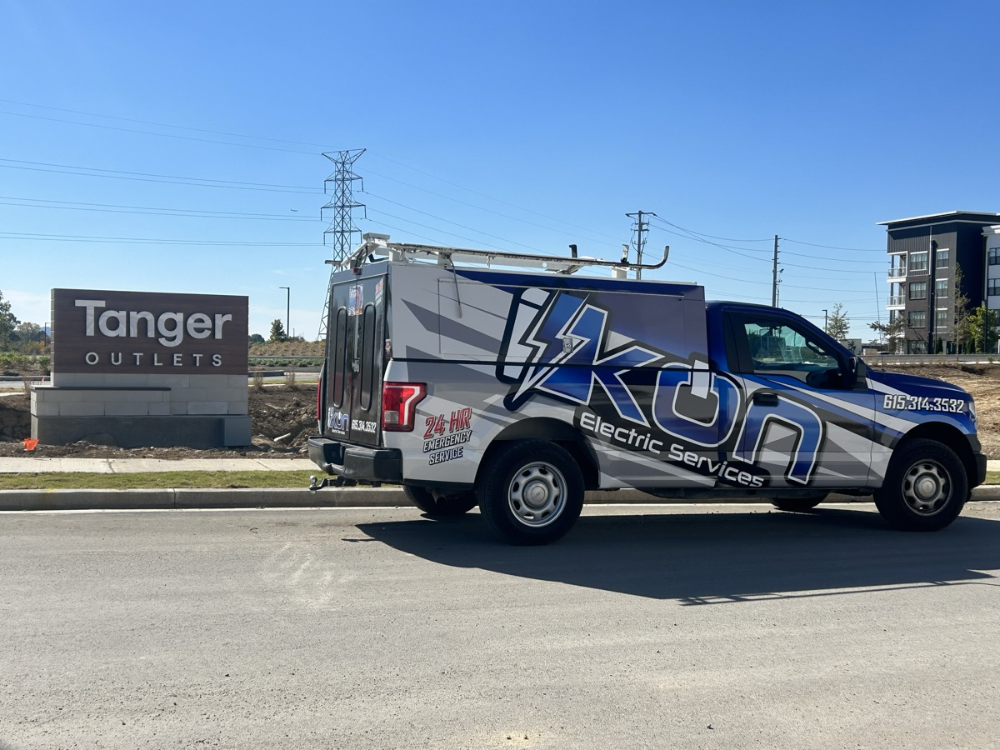

Owner / Operator — IKON Electric (Nashville Electrical Contracting)

- Managed the full project lifecycle for commercial and residential electrical contracts — from initial client contact, estimating, and scope definition through scheduling, execution, and project close-out.
- Directly managed and supervised employees across multiple simultaneous job sites, frequently working extended hours (up to six days a week) to keep every site on schedule and every client deadline met.
- Prepared project estimates and bids, and coordinated subcontractors, materials, and manpower across multiple simultaneous project sites to meet deadlines and budget targets.
- Served as primary point of contact for general contractors, property owners, and national retail brands throughout project execution, ensuring clear communication and consistent quality.
- Maintained and grew client relationships from initial estimate through project completion, building strong, repeat business with general contractors and commercial clients through reliable delivery and responsive problem-solving on-site.
- Built the business to a 5.0★ rating across 33 Google reviews and a 100% recommend rate on Facebook — see the Reviews section.
- Ran every side of the business as sole owner-operator: sales, contracts and RFIs, bidding, accounting and taxes, licensing, insurance, and compliance — in addition to managing the work itself.
Representative Clients & Projects
- Tanger Outlets — multiple tenant build-outs, including Puma, Lids, Victoria's Secret, Under Armour, and Nike
- Chrysler Dodge Plymouth of Franklin — first commercial client; multiple projects over time
- Mercedes-Benz of Franklin
- Nissan Franklin and Toyota Franklin — automotive dealership electrical work
- Pilot Travel Centers
- Benco Construction
- Store Crafters
- Everlast Epoxy
- Design Build Contractors
- Plus dozens of additional commercial and residential clients across the greater Nashville area